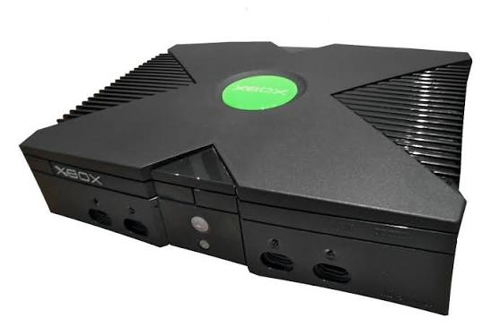
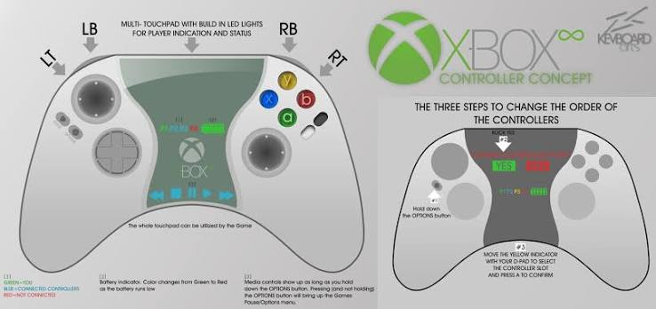

Original Xbox Overview
The original Xbox launched in North America on November 15, 2001. It was Microsoft’s first major step into the console gaming market. The console became important because of its built-in hard drive, Ethernet port, and games like Halo: Combat Evolved.
Reference: Microsoft News: Original Xbox Launch
What Made It Special?
The original Xbox was powerful for its time and helped make console online gaming more serious. It also helped launch major Xbox franchises that are still popular today.
Image credit: Evan-Amos, Public Domain, via Wikimedia Commons.

Popular Games
Some popular original Xbox games included Halo: Combat Evolved, Halo 2, Fable, Project Gotham Racing, and Star Wars: Knights of the Old Republic. Halo became one of the biggest reasons people remembered the original Xbox.
Reference: Xbox Backward Compatible Games
